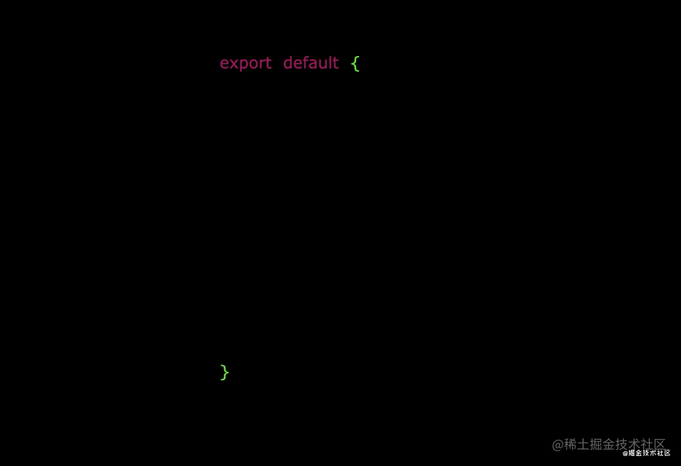

Vue3笔记
1.引言
1. 3.0发布的地址：
https://github.com/vuejs/core/releases/tag/v3.0.0
2. 各个版本地址：
https://github.com/vuejs/core/tags
3.vue3提升的方面
1.性能提升
渲染更快，内存更小
2.源码升级
1.使用Proxy代替defineProperty实现响应式
2.重写虚拟 DOM的实现和Tree-Shanking
3.拥抱TypeScript
Vue3更好支持TypeScript
TS是未来前端所驱
4.新的特性
1.composition API(组合API)
setup配置
ref与reactive
watch与watchEffect
provide与inject
2.新的内置组件
Fragment
teleport
suspense
3.其他改变
新的生命周期钩子
data选项应始终被声明为一个函数
移除keyCode支持作为v-on的修饰符
2.创建Vue3.0工程
1.使用脚手架vue-cli创建
官方文档：https://cli.vuejs.org/zh/guide/creating-a-project.html#vue-create
2.使用vite创建
官方文档：https://v3.cn.vuejs.org/guide/installation.html#vite
vite官网：https://vitejs.cn
vite-新一代前端构建工具（grunt、gulp、webpack）
优势：1.开发环境中，无需打包操作，可快速冷启动
2.轻量快速的热重载（HMR）
3.真正的按需编译，不再等待整个应用编译完成。
## 创建工程
npm init vite-app <project-name>
## 进入工程目录
cd <project-name>
## 安装依赖
npm install
## 运行
npm run dev3.常见Composition（组合式） API
1.拉开序幕的setup
1.理解：Vue3.0中一个新的配置项，值为一个函数
2.setup是所有Composition API(组合API)"表演的舞台"
3.组件中所用到的：数据、方法等等，均要配置在setup中
4.setup函数的两种返回值：
1.若返回一个对象，则对象中的属性、方法，在模版中均可以直接使用。（重点关注！）
2.若返回一个渲染函数：则可以自定义渲染内容（了解）
5.注意点：
1.尽量不要与vue2.x配置混用
vue.x的配置可以访问setup中的属性、方法
但在setup中不能访问到Vue2.x配置（data、methos、computed...）
如有重名，setup优先
2.setup不能是一个async函数，因为返回值不再是return的对象，而是promise,模版看不到return对象中的属性。（后期也可以返回一个promise实例，但需要suspense和异步组件的配合）
2.ref函数
作用：定义一个响应式的数据
语法：const xxx=ref(initValue)
创建一个包含响应式数据的引用对象（reference对象,简称ref对象）
JS中操作数据 xxx.value
模版中读取数据：不需要 .value , 直接： <div>{{xxx}}</div>
备注： 接收的数据可以是：基本类型，也可以是对象类型
基本类型的数据：响应式依然是靠 Object.defineProperty() 的get与set完成的
对象类型的数据：内部“求助”了Vue3.0中的一个新函数——reactive函数
3.reactive函数
作用：定义一个对象类型的响应式函数（基本类型不要用它，要用ref函数）
语法：const 代理对象 = reactive(源对象)接收一个对象（或数组），返回一个代理对象（proxy对象）
reactive定义的响应式数据是“深层次的”
内部基于ES6的proxy实现，通过代理对象操作源对象内部数据进行操作
4. Vue3.0的响应式
通过Proxy(代理)：拦截对象中任意属性的变化，包括：属性值的读写、属性的添加、属性的删除
通过Reflect(反射)：对被代理对象的属性进行操作
MDN文档中描述的Proxy与Reflect
//模拟Vue3中实现响应式
const p = new Proxy(person,{
// 有人读取p的某个属性时调用
get(target,propName){
console.log(`有人读取p身上的${propName}属性`)
return Reflect.get(target,propName)
},
// 有人修改p的某个属性、或给p追加某个属性时调用
set(target,propName,value){
console.log(`有人修改p身上的${propName}属性,我要去更新界面了`)
Reflect.set(target,propName,value)
},
// 有人删除p的某个属性时调用
deleteProperty(target,propName){
console.log(`有人删除p身上的${propName}属性,我要去更新界面了`)
return Reflect.deleteProperty(target,propName)
}
})5.reactive对比ref
1.从定义数据角度对比：
ref用来定义：基本类型数据
reactive用来定义：对象（或数组）类型数据
备注：ref也可以用来定义对象（或数组）类型数据，它内部会自动通过reactive转为代理对象
2.从原理角度对比： ref通过object.defineProperty() 的get 与set来实现响应式（数据劫持）
reactive通过使用Proxy来实现响应式（数据劫持），并通过Reflect操作源对象内部的数据
3.从使用角度对比：
ref定义的数据：操作数据需要 .value,读取数据时模版中直接读取不需要.value
reactive定义的数据：操作数据与读取数据：均不需要 .value
6.setup的两个注意点
1.setup执行的时机
在beforeCreate之前执行一次，this是undefined
2.setup参数
props：值为对象，包含：组件外部传递过来，且组件内部声明接收了的属性
context:上下文对象
attrs:值为对象，包含：组件外部传递过来，但没有在props配置中声明的属性，相当于this.atters
slots:收到的插槽内容，相当于this.slots
emit:分发自定义事件的函数，相当于this.emit
7.计算属性
1.computed函数
与Vue2.x中computed配置功能一致
写法：
import {computed} from 'vue'
setup(){
...
//计算属性——简写
let fullName = computed(()=>{
return person.firstName + '-' + person.lastName
})
//计算属性——完整
let fullName = computed({
get(){
return person.firstName + '-' + person.lastName
},
set(value){
const nameArr = value.split('-')
person.firstName = nameArr[0]
person.lastName = nameArr[1]
}
})
}2.watch函数
与Vue2.x中watch配置功能一致
两个小“坑”：
1.监视reactive定义的响应式数据时：oldValue无法正确获取、强制开启了深度监视（deep配置失效）。
2.监视reactive定义的响应式数据中某个属性时：deep配置有效。
//情况一：监视ref定义的响应式数据
watch(sum,(newValue,oldValue)=>{
console.log('sum变化了',newValue,oldValue)
},{immediate:true})
//情况二：监视多个ref定义的响应式数据
watch([sum,msg],(newValue,oldValue)=>{
console.log('sum或msg变化了',newValue,oldValue)
})
/* 情况三：监视reactive定义的响应式数据
若watch监视的是reactive定义的响应式数据，则无法正确获得oldValue！！
若watch监视的是reactive定义的响应式数据，则强制开启了深度监视
*/
watch(person,(newValue,oldValue)=>{
console.log('person变化了',newValue,oldValue)
},{immediate:true,deep:false}) //此处的deep配置不再奏效
//情况四：监视reactive定义的响应式数据中的某个属性
watch(()=>person.job,(newValue,oldValue)=>{
console.log('person的job变化了',newValue,oldValue)
},{immediate:true,deep:true})
//情况五：监视reactive定义的响应式数据中的某些属性
watch([()=>person.job,()=>person.name],(newValue,oldValue)=>{
console.log('person的job变化了',newValue,oldValue)
},{immediate:true,deep:true})
//特殊情况
watch(()=>person.job,(newValue,oldValue)=>{
console.log('person的job变化了',newValue,oldValue)
},{deep:true}) //此处由于监视的是reactive素定义的对象中的某个属性，所以deep配置有效3.watchEffect函数
watch的套路是：既要指明监视的属性，也要指明监视的回调。
watchEffect的套路是：不用指明监视哪个属性，监视的回调中用到哪个属性，那就监视哪个属性。
watchEffect有点像computed：
但computed注重的计算出来的值（回调函数的返回值），所以必须要写返回值。
而watchEffect更注重的是过程（回调函数的函数体），所以不用写返回值。
//watchEffect所指定的回调中用到的数据只要发生变化，则直接重新执行回调。
watchEffect(()=>{
const x1 = sum.value
const x2 = person.age
console.log('watchEffect配置的回调执行了')
})8.生命周期

- Vue3.0中可以继续使用Vue2.x中的生命周期钩子，但有有两个被更名：
beforeDestroy改名为beforeUnmountdestroyed改名为unmounted
- Vue3.0也提供了 Composition API 形式的生命周期钩子，与Vue2.x中钩子对应关系如下：
beforeCreate===>setup()created=======>setup()beforeMount===>onBeforeMountmounted=======>onMountedbeforeUpdate===>onBeforeUpdateupdated=======>onUpdatedbeforeUnmount==>onBeforeUnmountunmounted=====>onUnmounted
9.自定义hook函数
什么是hook？—— 本质是一个函数，把setup函数中使用的Composition API进行了封装。
类似于vue2.x中的mixin。
自定义hook的优势: 复用代码, 让setup中的逻辑更清楚易懂。
10.toRef
作用：创建一个 ref 对象，其value值指向另一个对象中的某个属性。
语法：const name = toRef(person,'name')
应用: 要将响应式对象中的某个属性单独提供给外部使用时。
扩展：toRefs 与toRef功能一致，但可以批量创建多个 ref 对象，语法：toRefs(person)
4.其它 Composition API
1.shallowReactive 与 shallowRef
- shallowReactive：只处理对象最外层属性的响应式（浅响应式）。
- shallowRef：只处理基本数据类型的响应式, 不进行对象的响应式处理。
- 什么时候使用?
- 如果有一个对象数据，结构比较深, 但变化时只是外层属性变化 ===> shallowReactive。
- 如果有一个对象数据，后续功能不会修改该对象中的属性，而是生新的对象来替换 ===> shallowRef。
2.readonly 与 shallowReadonly
- readonly: 让一个响应式数据变为只读的（深只读）。
- shallowReadonly：让一个响应式数据变为只读的（浅只读）。
- 应用场景: 不希望数据被修改时。
3.toRaw 与 markRaw
- toRaw：
- 作用：将一个由
reactive生成的响应式对象转为普通对象。 - 使用场景：用于读取响应式对象对应的普通对象，对这个普通对象的所有操作，不会引起页面更新。
- 作用：将一个由
- markRaw：
- 作用：标记一个对象，使其永远不会再成为响应式对象。
- 应用场景:
- 有些值不应被设置为响应式的，例如复杂的第三方类库等。
- 当渲染具有不可变数据源的大列表时，跳过响应式转换可以提高性能。
4.customRef
作用：创建一个自定义的 ref，并对其依赖项跟踪和更新触发进行显式控制。
实现防抖效果：
<template> <input type="text" v-model="keyword"> <h3>{{keyword}}</h3> </template> <script> import {ref,customRef} from 'vue' export default { name:'Demo', setup(){ // let keyword = ref('hello') //使用Vue准备好的内置ref //自定义一个myRef function myRef(value,delay){ let timer //通过customRef去实现自定义 return customRef((track,trigger)=>{ return{ get(){ track() //告诉Vue这个value值是需要被“追踪”的 return value }, set(newValue){ clearTimeout(timer) timer = setTimeout(()=>{ value = newValue trigger() //告诉Vue去更新界面 },delay) } } }) } let keyword = myRef('hello',500) //使用程序员自定义的ref return { keyword } } } </script>
5.provide 与 inject
作用：实现祖与后代组件间通信
套路：父组件有一个
provide选项来提供数据，后代组件有一个inject选项来开始使用这些数据具体写法：
祖组件中：
setup(){ ...... let car = reactive({name:'奔驰',price:'40万'}) provide('car',car) ...... }后代组件中：
setup(props,context){ ...... const car = inject('car') return {car} ...... }
6.响应式数据的判断
- isRef: 检查一个值是否为一个 ref 对象
- isReactive: 检查一个对象是否是由
reactive创建的响应式代理 - isReadonly: 检查一个对象是否是由
readonly创建的只读代理 - isProxy: 检查一个对象是否是由
reactive或者readonly方法创建的代理
5.Composition API 的优势
1.Options API 存在的问题
使用传统OptionsAPI中，新增或者修改一个需求，就需要分别在data，methods，computed里修改 。

2.Composition API 的优势
我们可以更加优雅的组织我们的代码，函数。让相关功能的代码更加有序的组织在一起。
6.新的组件
1.Fragment
- 在Vue2中: 组件必须有一个根标签
- 在Vue3中: 组件可以没有根标签, 内部会将多个标签包含在一个Fragment虚拟元素中
- 好处: 减少标签层级, 减小内存占用
2.Teleport
什么是Teleport？——
Teleport是一种能够将我们的组件html结构移动到指定位置的技术。<teleport to="移动位置"> <div v-if="isShow" class="mask"> <div class="dialog"> <h3>我是一个弹窗</h3> <button @click="isShow = false">关闭弹窗</button> </div> </div> </teleport>
3.Suspense
等待异步组件时渲染一些额外内容，让应用有更好的用户体验
使用步骤：
异步引入组件
import {defineAsyncComponent} from 'vue' const Child = defineAsyncComponent(()=>import('./components/Child.vue'))使用
Suspense包裹组件，并配置好default与fallback<template> <div class="app"> <h3>我是App组件</h3> <Suspense> <template v-slot:default> <Child/> </template> <template v-slot:fallback> <h3>加载中.....</h3> </template> </Suspense> </div> </template>
7.其他
1.全局API的转移
Vue 2.x 有许多全局 API 和配置。
例如：注册全局组件、注册全局指令等。
//注册全局组件 Vue.component('MyButton', { data: () => ({ count: 0 }), template: '<button @click="count++">Clicked {{ count }} times.</button>' }) //注册全局指令 Vue.directive('focus', { inserted: el => el.focus() })
Vue3.0中对这些API做出了调整：
- 将全局的API，即：
Vue.xxx调整到应用实例（app）上
- 将全局的API，即：
2.其他改变
data选项应始终被声明为一个函数。
过度类名的更改：
Vue2.x写法
.v-enter, .v-leave-to { opacity: 0; } .v-leave, .v-enter-to { opacity: 1; }Vue3.x写法
.v-enter-from, .v-leave-to { opacity: 0; } .v-leave-from, .v-enter-to { opacity: 1; }
移除keyCode作为 v-on 的修饰符，同时也不再支持config.keyCodes
移除v-on.native修饰符
父组件中绑定事件
<my-component v-on:close="handleComponentEvent" v-on:click="handleNativeClickEvent" />子组件中声明自定义事件
<script> export default { emits: ['close'] } </script>
移除过滤器（filter） 过滤器虽然这看起来很方便，但它需要一个自定义语法，打破大括号内表达式是 “只是 JavaScript” 的假设，这不仅有学习成本，而且有实现成本！建议用方法调用或计算属性去替换过滤器。